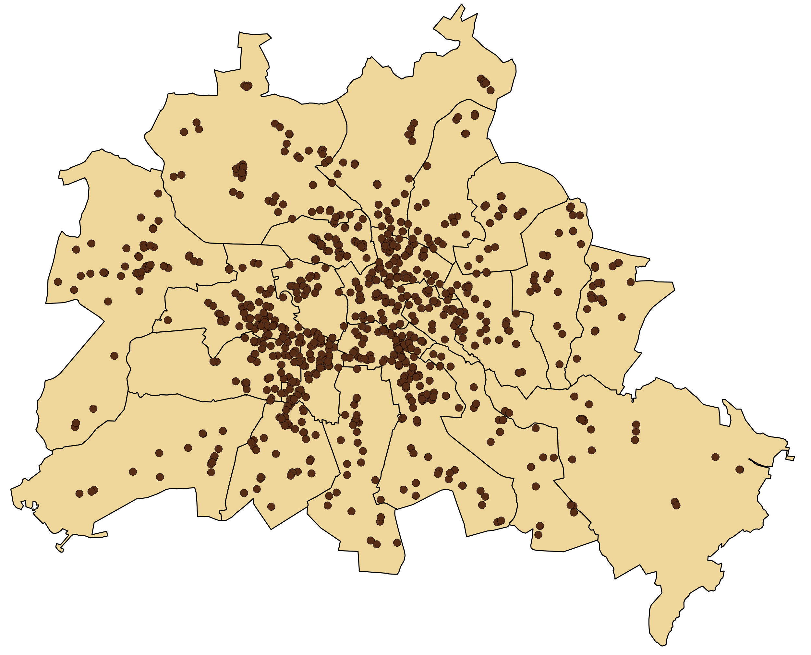
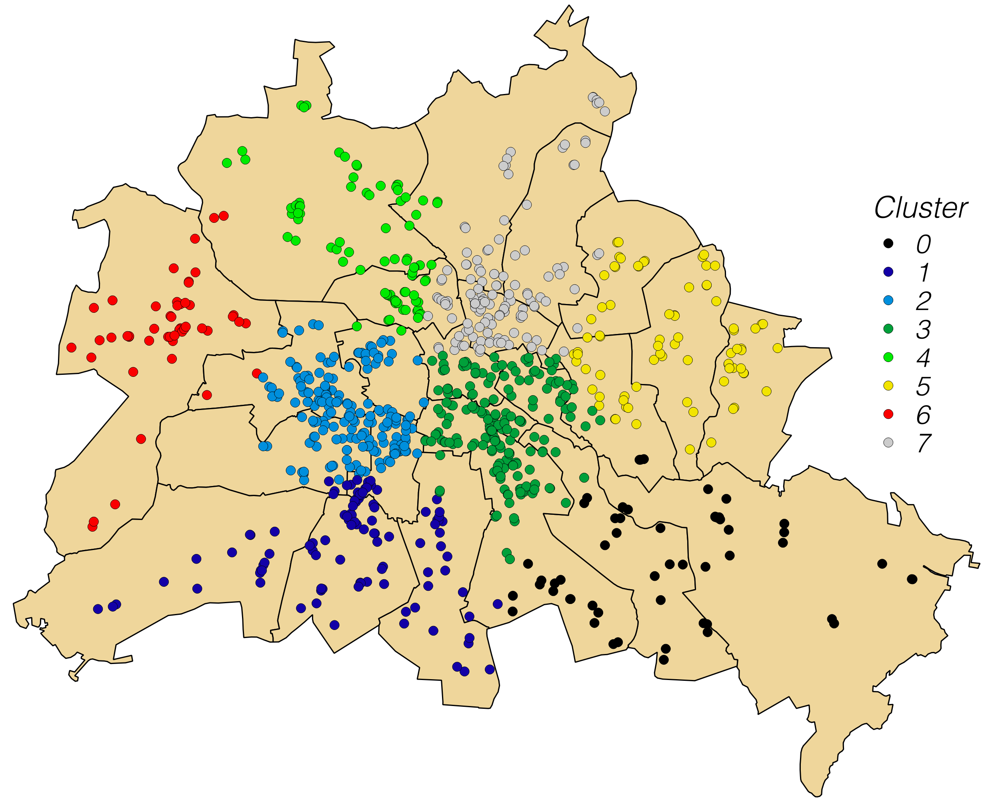

December 1st 2016
This website describes the functions of the plugin and their use within QGIS.
Cluster Points offers a set of cluster tools for an automatical grouping of a point layer in Quantum GIS minimizing the intra-group distance and maximizing the between-group distance: There are two inherently different algorithms the user may choose from. First, there is K-means clustering which randomly initializes the cluster centers and reassigns cluster members until the centers stop moving. Second, there is agglomerative hierarchical clustering which starts with as many clusters as there are points and gradually merges individual clusters according to a certain link function.
Cluster Points works with input and output shapefiles.
Cluster Points is a free software and offered without guarantee or warranty. You can redistribute it and/or modify it under the terms of version 3 of the GNU General Public License as published by the Free Software Foundation. Bug reports or suggestions are welcome at the e-mail address above.
Note that some code segments have been taken from the built-in ftools and the MMQGIS plugin. This plugin was started during the project phase of a GIS-Analyst training course in Berlin (Geo-sys). I acknowledge the assistance of the Geo-sys tutors and my classmates Juliane, Bennet and Sebastian.
The Cluster Points Menu can be opened in the QGIS plugin drop-down menu.
There are two different tools: Clustering and Cluster Centers which may be used in that order.
The Clustering Tool offers spatial clustering of a point layer based on the mutual distances between points. Basically, the inter-class distances are maximized whereas the intra-class distances are minimized. The user always needs to define the number of clusters which is sought (minimum is 2). Also, the user needs to decide between the Euclidean distance and the Manhattan distance within the cluster computation.
Two inherently different clustering types are available:
K-means is an iterative algorithm which is randomly initialized. Here, the version of Lloyd is implemented which consists of three steps. First, a user-defined number of clusters is initialized by randomly choosing points in the input layer as their centers. Then the iteration starts with alternating assignment and updating steps. During the assignment, the points are assigned to the closest cluster centers. During the updating, the cluster centers are recalculated from the members which were assigned to a certain cluster. The algorithm stops, as soon the cluster centers do not move any more. Note that the K-means algorithm is comparatively fast, but it slightly depends on its random initialization and hence does not always produce the same results.
The clustering here is agglomerative, i.e. it starts with as many clusters as there are points and gradually merges the two closest clusters to a composite cluster. The user needs to choose a link function which describes the way how the two closest clusters are found. He may choose from Ward's Linkage as well as Single, Complete and Average Linkage. The definitions of the individual link functions can be found online. By gradually merging clusters, the so-called cluster tree is built which shows when individual clusters were merged exactly. Each time two clusters are merged, the distances of the new composite cluster to all the other clusters need to be updated. To do this as efficient as possible, the Lance-Williams method is used here which quickly updates the underlying distance matrix. Note that the Lance-Williams method is unequivocal, but it is still computationally expensive, if the number of points is high.
The output always is a new shapefile with the same attribute table as the input layer, but an additional field Cluster ID appended to indicate cluster membership of individual points.
The Cluster Centers Tool comes into play, after clusters have been computed. The user has to pick a field indicating the cluster membership (it defaults to Cluster ID, if available). The basic functionality is only to compute, display and store the cluster centers.
Optionally, the line shapefile can be specified and connecting lines between individual cluster members and their cluster centers will be drawn.
To illustrate the functionality of the plugin, we have a look at some kind of customer addresses of a certain company in Berlin (polygons delineate Berlin districts). Let's assume the company wants to install 8 new logistic centers across the city and needs to know about the optimum locations to minimize distances between individual logistic centers and customers nearby (875 altogether).
To find the optimum locations, the Clustering is combined with the Cluster Center tool. The user sets 8 as the targeted number of clusters and runs the algorithm (in this case the K-means). The output is a point layer with the same number of points as the input, but with the new field Cluster ID appended to the attribute table and the cluster members displayed in color according to their Cluster ID.
 Then, the cluster centers can be computed. First, the line shapefile is omitted and only the cluster centers (mean coordinates per cluster) are created. They are displayed as green stars. Second, the line shapefile is specified as well and connecting lines are displayed to better visualize individual clusters.